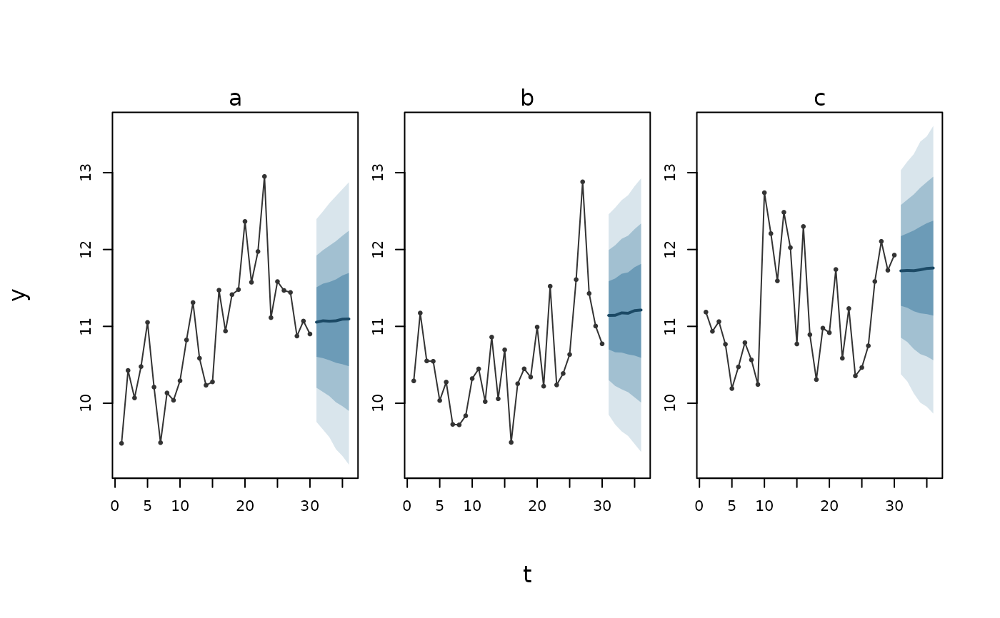

ilm_predict() with the settings a forecast wants: the distribution of a
new observation (target = "response"), for each series continued from
its own fitted state (groups = "fitted"). Every argument of
ilm_predict() can be given, and overrides these.
Usage
ilm_forecast(
fit,
newdata,
target = c("response", "mean", "link"),
groups = "fitted",
time = NULL,
group = NULL,
...
)Arguments
- fit
A fitted
"ilm_model".- newdata
A data frame of rows to predict. Or a named list of data frames, one per scenario, stacked with a
.scenariocolumn. A.drawcolumn gives covariates as draws; see Covariates given as draws.- target
"mean", the expected response;"response", a new observation; or"link", the linear predictor.- groups
How the random effects enter; see How the random effects enter. Required when the model has random-effect or correlation-over-time terms.
- time, group
The names of the columns of
newdataholding time and the series, such astime = "week", group = "region"; see Time and series columns. Needed only where neither the model nor the rows say.- ...
Other arguments to
ilm_predict():uncertainty,set,nsimandseed.
Value
A predictive distribution, as from ilm_predict(); The prediction
object there lists its elements.
Details
With a correlation over time, each series is carried forward from its last
fitted cell, one path per draw, so a series' forecasts at successive times
are drawn jointly (see Over time in ilm_predict()). A series the fit
has not seen is a new series: a fresh path, marked in new_level. Build
the rows with ilm_future(), and draw the fan chart with ilm_plot_fan().
Checks
A forecast makes ilm_predict()'s checks, and they are explained there
(Checks in ilm_predict()): few groups, units the fit has not seen, a
deterministic trend in time, and draws that are not finite or could not be
computed, each with what to do about it. The checks are warned, and kept on the forecast in
checks.
See also
ilm_future() for the rows, ilm_covariate_paths() for covariates
not known in advance, ilm_plot_fan() for the fan chart, and
ilm_aggregate() for totals over series or horizons.
Examples
set.seed(1)
d <- data.frame(id = factor(rep(c("a", "b", "c"), each = 30)), t = rep(1:30, 3))
d$y <- 10 + ave(rnorm(90, 0, 0.4), d$id, FUN = cumsum) + rnorm(90, 0, 0.5)
fit <- illume::ilm_model(y ~ 1, data = d, family = "gaussian",
ar = illume::ilm_rw1(~ t | id), verbose = FALSE)
fut <- ilm_future(d, time = "t", group = "id", h = 6, response = "y")
fc <- ilm_forecast(fit, fut, nsim = 500)
head(as.data.frame(fc))
#> id t y horizon new_level estimate mean lower_0.9 upper_0.9
#> 1 a 31 NA 1 FALSE 11.05462 11.05959 9.962953 12.17341
#> 2 a 32 NA 2 FALSE 11.07289 11.07241 9.884759 12.25770
#> 3 a 33 NA 3 FALSE 11.06739 11.07027 9.805912 12.34289
#> 4 a 34 NA 4 FALSE 11.07241 11.06487 9.690426 12.41880
#> 5 a 35 NA 5 FALSE 11.09388 11.08035 9.621010 12.49967
#> 6 a 36 NA 6 FALSE 11.09686 11.08159 9.533478 12.58073
ilm_plot_fan(fc, time = "t", group = "id", history = d, response = "y")
